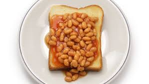

Beans On Toast
Ingredients
- 2 pieces of bread, any kind
- 1 400g can Heinz Baked Beans
- Salt, to taste
- Black pepper, to taste
- Paprika flakes, to taste
Steps
- First, toast the bread using a toaster or a pan.
- Heat up the baked beans in a saucepan and add the seasonings.
- Place the toast on a plate and pour the baked beans over it.
If you're feeling fancy, why not add some scrambled eggs?